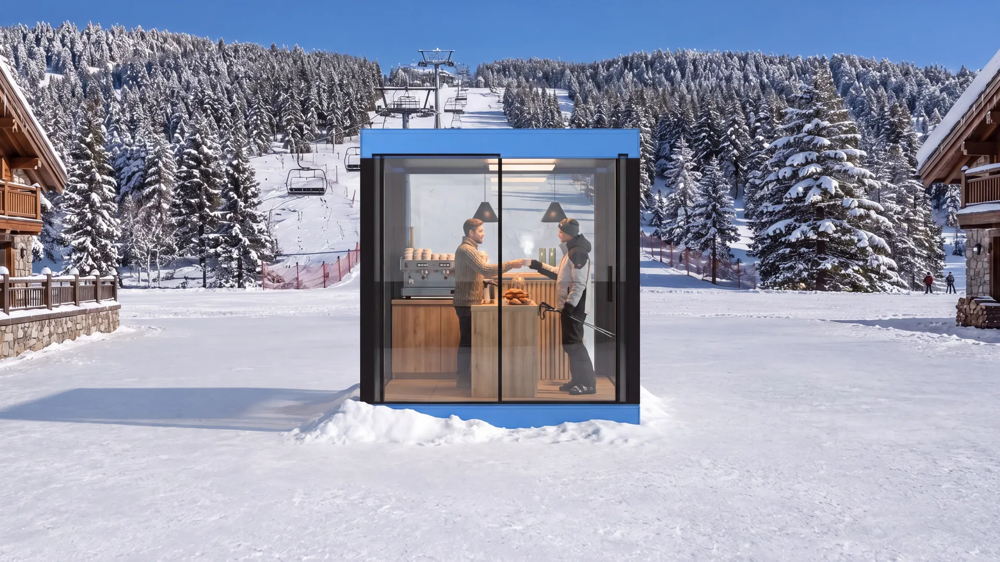
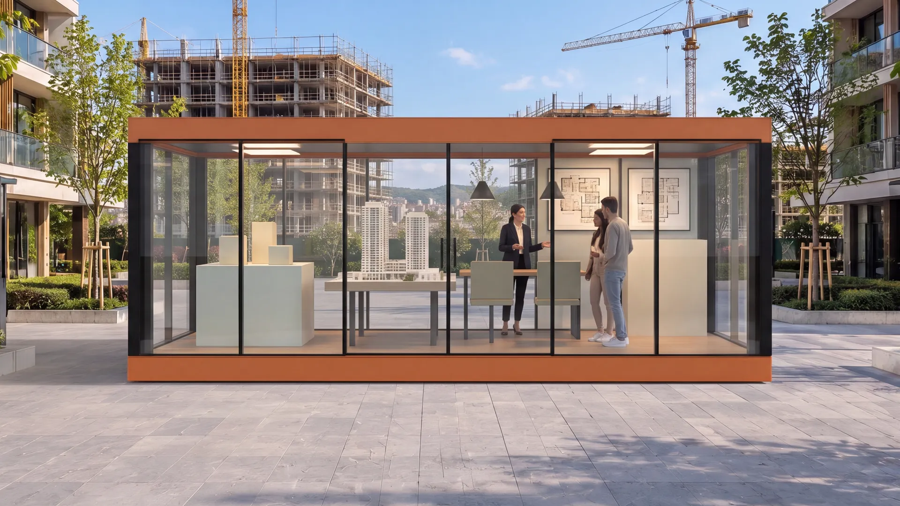
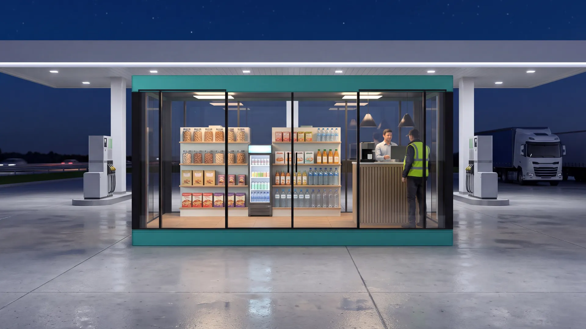
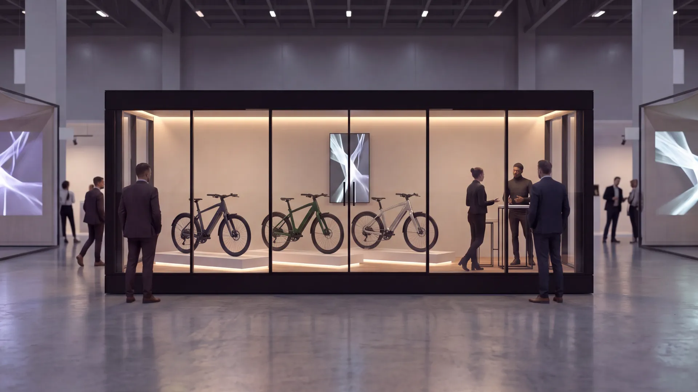

Bir kabin, bir yıl · altı adresBu hafta burada.
Teklif al
Bu hafta burada.
Gelecek ay başka yerde.

01 · Ocak · Kayak merkezi
FLEXA 235Sezon açılır, kabin pistin dibinde.
02 · Mart · AVM atriumu
FLEXA 482Mağaza açmadan önce, mağaza gibi.

03 · Mayıs · Konut projesi
FLEXA 616Bina yükselirken satış başlar.
04 · Ağustos · Boğaz kıyısı
FLEXA 482Akşam ışığında bir vitrin.

05 · Ekim · Otoyol istasyonu
FLEXA 482Tadilat sürer, satış durmaz.

06 · Kasım · Fuar salonu
FLEXA 616Bir gecede lansman standı.
Altı adres yan yana; kaydırdıkça yolculuk sağa akar.
Dikey kaydırma yatay bir yolculuğa dönüşür. Ortadaki kart büyür, varsa videosu oynar, bilgisi açılır. Kenardaki kartlar bir sonraki adresi önceden gösterir. Görsel ve video kalitesi bozulmadan, hiçbir şey dönüşmeden anlatılır.